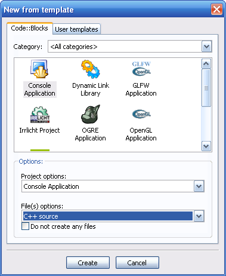
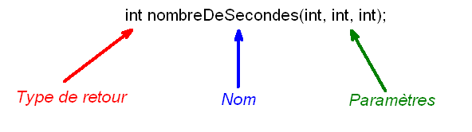
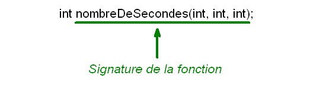

Vous programmez en C et vous souhaitez vous mettre au C++ ? Ce tutoriel présente une introduction au C++ pour ceux qui connaissent déjà la programmation en C. Il répond notamment aux questions suivantes :
Comment afficher et saisir du texte en console en C++ ?
Quelles nouveautés ont été introduites pour les variables ? Et les fonctions ?
Ce chapitre sera assez simple : nous verrons quelles techniques on utilise en C++ pour afficher du texte à l'écran (dans une console) et comment on récupère du texte saisi au clavier. Vous allez voir que c'est assez différent ce qu'on connaissait en C avec printf et scanf.
Jusqu'ici, vous n'avez créé dans votre IDE que des projets en C. Or, en C++ on utilise un autre compilateur. Par exemple, il y a gcc qui est un compilateur C, et g++ qui est un compilateur C++. Il va donc falloir dire à votre IDE que vous allez faire du C++, sinon il appellera le mauvais compilateur (et là ça risque pas de marcher :-° ).
Lancez donc votre IDE favori. Pour ma part, vous l'aurez compris dans les chapitres précédents, je travaille principalement sous Code::Blocks. Si vous avez un autre IDE comme Visual C++ ou Dev C++ ça marche aussi ;)
Créez un nouveau projet de type console (eh oui, on retourne à la console pour faire nos expériences) et pensez à bien sélectionner C++.

Création d'un nouveau projet. Veillez à bien sélectionner C++
Cliquez sur "Create" pour créer le nouveau projet. Code::Blocks crée un premier fichier nommé main.cpp dans le projet avec quelques premières lignes de code C++.
Voici le code de base que nous propose Code::Blocks dans notre nouveau projet :
Intéressons-nous maintenant à chacune de ces lignes de code et voyons ce qui change pour le moment par rapport au C.
Include
#include <iostream>
On reconnaît là une bonne vieille directive de préprocesseur.
2 choses :
Ce qui choque tout d'abord, c'est qu'il n'y a pas d'extension .h. En effet, en C++ les fichiers d'en-tête standard ne possèdent plus d'extension .h, mais vous verrez qu'il y a des exceptions (des gens qui n'ont pas encore fait l'évolution :p ).
D'autre part, la directive d'inclusion n'est plus la même. Ici, elle s'appelle iostream, ce qui signifie "flux d'entrée-sortie". Oubliez stdlib et stdio, ce sont des en-têtes du C, on ne les utilise plus en C++.
On inclut donc ici la librairie iostream qui contient les outils nécessaires pour afficher du texte dans la console et récupérer la saisie au clavier.
Fonction main()
int main()
{
// ...
return 0;
}
On retrouve notre fonction main habituelle. Cela fonctionne comme en C : tout programme commence par la fonction main(). Rien de choquant ici ;) La fonction retourne 0, ce qui est là encore logique puisque la fonction doit retourner un int.
cout
std::cout << "Hello world!" << std::endl;
La première ligne du main est la plus intéressante, c'est d'ailleurs la seule qui doit vraiment vous surprendre. En effet, ça ne ressemble pas à un appel de fonction, il y a plein de signes bizarres, pas de parenthèses comme on a l'habitude dans un appel de fonction. Bon sang de bonsoir qu'est-ce que c'est ? o_O
cout n'est pas une fonction mais un flux, un élément nouveau introduit en C++. Notez que ça n'a rien à voir avec la POO pour le moment ;)
Le flux cout est l'équivalent de la fonction printf... mais en mieux, en plus simple :D
Revoyons cette fameuse ligne de code :
std::cout << "Hello world!" << std::endl;
Il y a deux mots-clé particuliers dans cette ligne : cout et endl. Vous noterez qu'ils ont tous les deux le préfixe std:: Tous les mots-clé de la librairie standard du C++ utilisent ce préfixe. Théoriquement, on est obligé de le mettre à chaque fois, mais c'est un peu lourd. On a heureusement une solution pour se simplifier la vie. Rajoutez cette ligne de code avant le main() :
using namespace std;
Du coup, vous pouvez virer tous les préfixes std:: Ca rend déjà notre code un peu plus facile à lire :
#include <iostream>
using namespace std;
int main()
{
cout << "Hello world!" << endl;
return 0;
}
Voilà un premier point de réglé. Nous ne rentrerons pas dans le détail de ce "using namespace" pour le moment (pour ne pas compliquer inutilement les choses).
Intéressons-nous de plus près à cette ligne avec cout, désormais plus lisible :
cout << "Hello world!" << endl;
Vous voyez qu'il y a un nouveau symbole : le chevron < On le rencontre d'ailleurs toujours par paire, comme ceci : <<
Imaginez que ces chevrons représentent en fait des flèches. Du coup, la ligne se lit de droite à gauche :
On prend le mot-clé endl, qui signifie retour à la ligne.
On l'insère à la fin de la chaîne "Hello world!"
On insère le résultat obtenu dans cout.
cout est la contraction de "c-out" (console out = sortie console). En bon français, vous devez prononcer cela "Ci Aoute" :p cout représente la sortie en C++ (out = sortie). La sortie d'un programme, ben c'est tout simplement l'écran. Donc cout représente l'écran ;)
Résultat des courses, ce code signifie que le texte "Hello world!" suivi d'un retour à la ligne est envoyé vers l'écran. Il faut bien imaginer que les chevrons << indiquent le sens dans lequel les données sont envoyées.
Cette ligne de code commande donc un affichage de texte à l'écran. Compilez et exécutez le programme pour voir :
Hello world!
Revenons un peu sur endl. endl est un mot-clé qui signifie "fin de ligne" (end line en anglais). En fait, c'est tout bêtement un mot qui remplace le que vous connaissez du C, qu'on utilisait pour faire des sauts de ligne.
Ah bon, on ne peut plus utiliser en C++ ?
Si si. En fait, le mot-clé endl a été entre autres introduit pour améliorer la lisibilité du code source (pour ne pas qu'on mélange le "n" avec le texte à afficher). Vous pouvez d'ailleurs tester, vous verrez que l' fonctionne toujours :
cout << "Hello world!\n";
Le résultat à l'écran est exactement le même :
Hello world!
L'intérêt de cout
Pour le moment, vous devez vous dire que cout ressemble étrangement à la fonction printf, avec juste des symboles << en plus pour vous embrouiller l'esprit :-°
En fait, c'est encore plus facile à utiliser que printf. L'intérêt se voit notamment lorsqu'on veut afficher le contenu d'une variable. Regardez ce code, c'est super simple :
int main()
{
int age = 21;
cout << "Salut, j'ai " << age << " ans" << endl;
return 0;
}
Salut, j'ai 21 ans
Voilà, c'est assez intuitif pour que je n'aie pas besoin de vous expliquer comment ça marche ;)
Ce qui est génial, c'est qu'on n'a plus besoin de s'embêter avec la syntaxe des printf : %d, %lf, %s, %c etc... Ici, le langage est plus intelligent, il reconnaît le type de variable qui lui est envoyé.
Sceptiques ? Ok, essayez d'ajouter une variable de type chaîne de caractère dans ce cout :
int main()
{
int age = 21;
char pseudo[] = "M@teo21";
cout << "Salut, j'ai " << age << " ans et je m'appelle " << pseudo << endl;
return 0;
}
Salut, j'ai 21 ans et je m'appelle M@teo21
Vous voyez, on a envoyé d'un coup à cout un entier et une chaîne de caractères, sans préciser le type de variable, et il n'a pas bronché :p
Pour rappel, en C on aurait dû faire :
printf("Salut, j'ai %d ans et je m'appelle %s\n", age, pseudo);
Non seulement il fallait se souvenir des codes %d et %s, mais en plus les variables utilisées sont indiquées à la fin. En C++ avec cout, comme vous avez pu le constater, la variable est placée au milieu, ce qui rend le code plus facile à lire :)
Bien entendu, vous n'êtes pas limité à un seul cout par programme ^^ Vous pouvez tout à fait faire plusieurs cout si vous le voulez :
Après avoir vu comment afficher du texte, voyons voir maintenant comment récupérer du texte saisi au clavier. Là encore, ça fonctionne avec un système de flux, et vous allez voir que c'est un vrai régal de simplicité :D
Le mot-clé à connaître ici est cin. Il vient en remplacement de la pratique (mais complexe) fonction scanf du langage C. cin est la contraction de "c-in", ce qui signifie entrée console. Prononcez ça comme il faut siouplaît : "Ci in" :p
cin représente l'entrée en C++. Et qu'est-ce que l'entrée ? C'est le clavier ! Eh oui, c'est par le clavier qu'on entre les données.
cin représente donc le clavier et permet de récupérer du texte saisi par l'utilisateur. Tenez, on va faire un truc super original : on va lui demander son âge :-°
Regardez comment ça fonctionne :
cin >> age;
Si vous êtes un peu observateur, 2 choses doivent vous avoir choqué :
Les flèches ont changé de sens ! Eh oui, la lecture se fait ici de gauche à droite. cin représente le clavier et envoie les données dans la variable age. Il faut donc imaginer que les données transitent du clavier vers la variable age. C'est ce qu'on appelle un flux ;)
Il n'y a pas de symbole & devant age ! En C, on aurait dû écrire &age pour envoyer l'adresse de la variable à la fonction pour qu'elle sache où écrire en mémoire. En C++, c'est plus la peine ! Il y a en effet un mécanisme qui remplace un peu les pointeurs qu'on appelle les références. On étudiera ça dans le prochain chapitre plus en détails.
Programmes de test de cin
Testons maintenant cin dans un petit programme. Voici le code complet :
#include <iostream>
using namespace std;
int main()
{
int age = 0;
cout << "Quel age avez-vous ?" << endl;
cin >> age;
cout << "Ah ! Vous avez donc " << age << " ans !" << endl;
return 0;
}
Quel age avez-vous ?
21
Ah ! Vous avez donc 21 ans !
Désolé si je me répète, mais je trouve cela d'une simplicité effarante ^^ Finis les %d qui nous agacent, finis les oublis de symbole & dans les scanf, finis :D Bon d'accord, cette nouvelle syntaxe surprend un peu quand on a fait pas mal de C avant, mais on s'y fait vite rassurez-vous.
On peut aussi s'entraîner à demander le pseudonyme de l'utilisateur :
"Ca change" ? Ah ben oui un peu, c'est sûr :D En effet, la syntaxe des flux cout et cin surprend un peu... mais je suis sûr que vous serez convaincu comme moi que grâce à ce système de nombreuses choses sont simplifiées !
On va continuer notre tour d'horizon des ajouts-au-C++-qui-n'ont-rien-à-voir-avec-la-POO dans le chapitre suivant. Au programme, nous allons découvrir les changements au niveau de la gestion des variables. Nous verrons en particulier ce que sont ces mystérieuses références dont vous avez entendu parler.
Nous continuons notre tour d'horizon des nouveautés du C++ dans ce chapitre.
Nous nous intéresserons aux nouveautés relatives aux variables, c'est-à-dire à la gestion de la mémoire. Nous découvrirons entre autres le type bool, les modifications par rapport aux définitions de variables, les allocations dynamiques en C++ et les références.
Rien de bien difficile au programme donc, mais il s'agit de nouveautés importantes, donc à ne pas négliger.
On a découvert dès le début du cours de C qu'il existait un grand nombre de types de variable différents :
int
long
float
double
char
etc.
Le problème s'est posé lorsqu'on a voulu stocker des booléens. Faute d'avoir un type de donnée spécialisé dans le stockage des booléens, on a fait comme la plupart des programmeurs C font : on a utilisé un type entier, comme int.
Or, si on utilise int pour les booléens, on risque de les confondre avec des variables destinées à stocker des nombres, puisque int est à la base fait pour stocker des nombres !
Petit exemple tout simple :
int majeur = 1;
int age = 21;
La variable majeur est un booléen, car elle signifie soit vrai soit faux. La variable age, elle, est un nombre. Elle peut valoir par exemple 21.
Mais comment fait-on pour savoir laquelle de ces variables est un booléen et laquelle est un nombre ? On peut se baser sur le nom de la variable, c'est sûr, mais il aurait été plus pratique et plus clair d'avoir un type spécial pour les booléens.
Ca tombe bien ! Il y a justement en C++ un nouveau type de base : le type bool. Toute variable de ce type peut prendre 2 valeurs :
true, qui signifie vrai.
false, qui signifie faux.
(je vous conseille de retenir ces 2 valeurs par coeur, vous en aurez besoin :-° )
Du coup, le code qu'on a vu plus haut s'écrirait comme ceci en C++ :
bool majeur = true;
int age = 21;
Voilà une bonne chose qui nous permettra d'éviter des ambigüités dans nos programmes :)
Rappel : les booléens dans les conditions
Je tiens juste à vous faire un petit rappel. Si vous avez bien suivi le cours de C, ça ne devrait pas vous choquer ;)
En théorie, on peut tester un booléen comme ceci dans une condition :
if (majeur == true) // S'il est majeur (forme longue)
{
// ...
}
Mais en général, si la variable a un nom clair, on préfèrera enlever la partie == true. C'est tout à fait possible et l'ordinateur le comprend très bien :
if (majeur) // S'il est majeur (forme courte)
{
// ...
}
Ce code est plus lisible et plus court que le précédent. On comprend bien que la condition est "S'il est majeur".
Par ailleurs, le point d'exclamation sert à exprimer la négation. Dans notre cas, ce code signifierait "S'il n'est pas majeur" :
if (!majeur) // S'il n'est PAS majeur
{
// ...
}
Ce n'est pas une nouveauté du C++ car ça existait déjà en C, mais je tenais juste à vous informer que cette technique fonctionnait toujours avec le type bool ;)
En C, les variables devaient être déclarées (= créées) au début des fonctions. Vous avez vu cela dans le chapitre sur les variables au tout début du cours ;)
Vous deviez donc faire toutes vos déclarations avant de commencer les instructions :
void maFonction()
{
// D'abord on déclare les variables
double prixOrigine = 0.0;
double prixAchat = 0.0;
double difference = 0.0;
FILE* fichier = NULL;
// Ensuite on peut exécuter des instructions, des appels de fonction, etc.
fichier = fopen("exemple.txt", "r");
if (fichier != NULL)
{
fonction();
fscanf(fichier, "%lf", &prixOrigine);
fscanf(fichier, "%lf", &prixAchat);
difference = prixAchat - prixOrigine;
// etc.
}
}
La nouveauté en C++, c'est que l'on peut désormais déclarer des variables n'importe où dans une fonction. C'est plus pratique lorsqu'on programme, ça nous évite d'avoir à remonter au début de la fonction si on n'a besoin d'une variable qu'à un moment de la fonction. Cela peut aussi améliorer la lisibilité du code surtout dans de grosses fonctions.
On pourrait donc écrire le code précédent comme ceci en C++ :
void maFonction()
{
FILE* fichier = NULL;
fichier = fopen("exemple.txt", "r");
if (fichier != NULL)
{
fonction();
double prixOrigine = 0.0; // Déclaration au milieu
fscanf(fichier, "%lf", &prixOrigine);
double prixAchat = 0.0; // Autre déclaration au milieu
fscanf(fichier, "%lf", &prixAchat);
double difference = prixAchat - prixOrigine; // Encore autre déclaration au milieu
// etc.
}
}
Précision importante : les variables ainsi créées sont locales aux blocs où elles ont été déclarées. Je m'explique. On dit que les accolades { et } délimitent des blocs. Dans le code ci-dessus, vous devriez en voir deux : la fonction et le bloc if. Comme la variable prixAchat a été déclarée dans le bloc if, elle sera supprimée à la fin du bloc if. Si elle avait été déclarée au début de la fonction en revanche, elle aurait été accessible dans toute la fonction.
Voilà, c'est assez simple à comprendre mais il faut le savoir ! La variable est détruite à la fin du bloc dans lequel elle a été déclarée.
void maFonction()
{
FILE* fichier = NULL;
fichier = fopen("exemple.txt", "r");
if (fichier != NULL)
{
fonction();
double prixOrigine = 0.0; // Création de prixOrigine
fscanf(fichier, "%lf", &prixOrigine);
double prixAchat = 0.0; // Création de prixAchat
fscanf(fichier, "%lf", &prixAchat);
double difference = prixAchat - prixOrigine; // Création de difference
} // Destruction automatique de prixOrigine, prixAchat et difference
} // Destruction automatique de fichier
Déclaration dans une boucle
Dans le même ordre d'idée, il y a une nouveauté vraiment très pratique (comprenez : je m'en sers tout le temps :p ). On peut déclarer une variable directement dans une instruction for.
Prenons un exemple. Vous codez votre programme, tout va bien. Puis à un moment, pour une raison ou une autre, vous avez besoin de faire une boucle qui se répète 10 fois. Vous allez sûrement faire un for. Mais pour boucler 10 fois, vous aurez besoin d'une variable de boucle qui va retenir le nombre de tours de boucle (quand on n'est pas inspiré on appelle en général cette variable i ).
En C, c'est un peu embêtant parce qu'il faut remonter au début de la fonction pour rajouter la déclaration de la variable. En plus, on ne sait pas trop quand elle sera utilisée en lisant la déclaration :
void maFonction()
{
int i = 0;
/* Plein de code
....
....
*/
for (i = 0 ; i < 10 ; i++)
{
}
}
La nouveauté en C++, c'est que vous pouvez déclarer votre variable i directement dans l'instruction for. Elle sera détruite à la fin de la boucle, quand vous n'en aurez plus besoin. Avantages : vous n'avez pas à remonter au début de la fonction pour déclarer la variable, et celle-ci est automatiquement détruite à la fin de la boucle. Pas d'utilisation inutile de la mémoire.
Le code C++ ressemblera donc à cela :
void maFonction()
{
/* Plein de code
....
....
*/
for (int i = 0 ; i < 10 ; i++) // Déclaration de i
{
} // Destruction automatique de i
}
Ca n'a l'air de rien, mais je vous assure qu'en pratique quand on programme, ça c'est vraiment génial :D Vous me verrez donc le faire la plupart du temps dans la suite du cours.
Si je vous dis "malloc" et "free", ça vous rappelle de joyeux souvenirs non ? ^^
int main()
{
int *variable = NULL;
variable = malloc(sizeof(int)); // Allocation de mémoire
free(variable); // Libération de mémoire
return 0;
}
L'allocation dynamique est une technique qui permet de gérer vous-même l'allocation de mémoire pour vos variables. C'est notamment très pratique dans le cas de l'allocation de tableaux dont on ne connaît pas la taille avant compilation (revoyez le chapitre sur l'allocation dynamique au besoin !).
En C++, les allocations dynamiques existent toujours et on en fait toujours. D'ailleurs, les fonctions malloc et free sont toujours utilisables. Cependant, le C++ dispose de nouveaux opérateurs spécialisés dans les allocations dynamiques : new et delete.
Allocation dynamique d'une variable
new et delete ne s'utilisent pas exactement de la même manière que malloc et free. On va dans un premier temps apprendre à s'en servir pour allouer une variable simple, puis on verra ensuite le cas de l'allocation de tableaux.
On souhaite donc allouer dynamiquement une variable (de type int par exemple). En C++, on va d'abord devoir créer le pointeur et l'initialiser à NULL, ça on n'y coupe pas :
int *variable = NULL;
Allocation de mémoire
L'allocation de mémoire avec new se fait comme ceci :
variable = new int; // Allocation dynamique
Comparé à la "version C", il n'y a pas photo :D On n'a plus besoin d'utiliser l'opérateur sizeof() du C. Ici, on indique juste le type de variable à créer.
Libération de mémoire
Lorsque vous avez fini d'utiliser votre variable et que vous n'en avez plus besoin, vous devez la libérer avec l'opérateur delete. Ultra-simple :
delete variable; // Libération de mémoire
Résumé
En résumé, voici à quoi ressemble un code d'allocation / libération de mémoire en C++ :
int main()
{
int *variable = NULL;
variable = new int; // Allocation de mémoire
delete variable; // Libération de mémoire
return 0;
}
Allocation dynamique d'un tableau
Si on veut allouer un tableau, l'opération est là encore très simple. On n'a plus besoin de faire un calcul du type 20 * sizeof(int) comme on devait le faire en C.
On commence par créer le pointeur :
int *tableau = NULL;
Allocation de mémoire
Ensuite, l'allocation se fait comme ceci :
tableau = new int[20]; // Allocation de mémoire (20 cases)
Dans ce cas, un tableau de 20 cases sera alloué. Bien entendu, il est aussi possible de remplacer ce nombre par une variable :
tableau = new int[taille]; // Allocation de mémoire ("taille" cases)
La longueur du tableau sera définie par la valeur de la variable taille.
Libération de mémoire
Lorsque vous n'avez plus besoin du tableau, vous devez le libérer... avec cette fois l'opérateur delete[] pour bien préciser qu'il s'agit d'un tableau. Vous n'avez pas besoin de préciser la taille entre crochets, mais n'oubliez pas ces crochets ils sont importants.
delete[] tableau; // Libération de mémoire
Résumé
int main()
{
int *tableau = NULL;
tableau = new int[20]; // Allocation de mémoire (tableau)
delete[] tableau; // Libération de mémoire (tableau)
return 0;
}
Vous souvenez-vous du chapitre sur les structures et énumérations ? :) On y avait appris à créer nos propres types de variables. On avait notamment utilisé l'exemple d'une structure nommée Coordonnees :
struct Coordonnees
{
int x;
int y;
};
Le problème des structures en C, c'est qu'il fallait placer le mot-clé struct au début de chaque déclaration d'une variable de type personnalisé :
struct Coordonnees point;
Pour éviter d'avoir à répéter ce mot à chaque déclaration, on avait découvert l'instruction typedef qu'on utilisait comme ceci avant la définition de notre structure :
typedef struct Coordonnees Coordonnees; // typedef permet d'éviter d'avoir à taper "struct" à chaque déclaration
struct Coordonnees
{
int x;
int y;
};
Du coup, on pouvait déclarer une variable sans avoir à écrire struct devant :
Coordonnees point; // Le mot-clé struct est inutile grâce au typedef
La nouveauté
En C++, qu'on se rassure, les structures existent toujours (il y a même encore mieux, mais n'anticipons pas ;) ).
La nouveauté du C++, c'est que le typedef est désormais automatique. A chaque fois que l'on déclare une structure (ou une énumération), un typedef est réalisé automatiquement par le compilateur. On peut donc n'écrire que l'instruction de déclaration de la structure :
// Le typedef est réalisé automatiquement par le compilateur, pas besoin de l'écrire
struct Coordonnees
{
int x;
int y;
};
Grâce à cela, le mot-clé struct devient totalement inutile lors d'une déclaration de variable :
Coordonnees point; // Le mot-clé struct est inutile grâce au typedef automatique
Nous arrivons maintenant au point le plus important (et délicat) de ce chapitre. Ouvrez grandes vos oreilles (ou plutôt vos yeux :-° ).
Le C++ introduit un nouveau concept : les références. Une référence est un synonyme d'une autre variable. On verra ce que ça veut dire un peu plus loin ;) Vous allez voir que les références ressemblent beaucoup aux pointeurs. Elles ont en effet été créées pour simplifier l'utilisation des pointeurs. Attention toutefois : je vous préviens qu'au début vous risquez de confondre les références avec les pointeurs (c'est assez perturbant quand on voit ça la première fois j'avoue :p ).
Les références à l'intérieur d'une fonction
Pour créer une référence, on doit utiliser le symbole & dans la déclaration :
int &referenceSurAge;
Bon, on a créé une référence. Et alors ? Et alors si vous compilez le code ci-dessus, le compilateur va vous insulter poliment :
Citation : Compilateur C++
error: 'referenceSurAge' declared as reference but not initialized
Si vous lisez l'anglais (et si vous ne le lisez pas vous devriez), vous avez compris le problème : le compilateur veut qu'on initialise immédiatement la référence. Et ça c'est très important : une référence doit être immédiatement initialisée dès le début, contrairement aux pointeurs. Et ce n'est pas tout : une fois initialisée, la référence ne pourra plus changer !
Il y a donc deux règles que j'aimerais que vous reteniez par coeur :
Règle 1 : une référence doit être initialisée dès sa déclaration.
Règle 2 : une fois initialisée, une référence ne peut plus être modifiée.
Initialisation d'une référence
On va donc initialiser notre référence. Comme je vous l'ai dit un peu plus tôt, une référence est un synonyme d'une autre variable. Cela veut donc dire qu'il faut créer une autre variable pour y trouver un minimum d'intérêt :p
Allez hop, il est l'heure de ressortir la bonne vieille variable qui a fait ses preuves : la variable... age ! (le premier qui ose dire que je fais des cours pas originaux il va tâter de mon sabre :pirate: )
int age = 21; // Déclaration de la variable age (rien de nouveau)
int &referenceSurAge = age; // Déclaration et initialisation d'une référence sur la variable age
Pour initialiser une référence, vous avez juste besoin d'écrire le nom de la variable dont elle sera le synonyme. Pas besoin d'écrire &age comme on le faisait avant avec les pointeurs.
Utilisation de la référence
Bon, maintenant notre référence est créée. On a un synonyme de la variable age. Comment on s'en sert concrètement ? Exactement comme la variable age ! Pas besoin de mettre une étoile * devant pour dire qu'on veut obtenir la valeur. Les références permettent, vous allez le voir, de simplifier l'écriture de nos programmes pour éviter au maximum les erreurs (un oubli d'une étoile est si vite arrivé !).
Regardez ce petit programme complet qui affiche la variable age, la modifie, et la réaffiche, le tout en passant par une référence :
int main()
{
int age = 21;
int &referenceSurAge = age;
cout << referenceSurAge << endl;
cout << age << endl;
referenceSurAge = 40;
cout << referenceSurAge << endl;
cout << age << endl;
return 0;
}
Résultat :
21
21
40
40
Comme vous pouvez le voir, une référence s'utilise exactement comme la variable d'origine. C'est le compilateur qui fait la "conversion" et qui sait qu'il doit affecter la variable "age" lorsqu'on travaille avec la référence.
Comparatif pointeur / référence
En C++, les pointeurs existent toujours. Les références sont juste une alternative aux pointeurs. Elles ont surtout l'avantage d'être plus simples à utiliser, mais elles ne peuvent pas les remplacer complètement. Pourquoi ? On l'a vu : une référence ne peut pas faire référence à une nouvelle variable une fois qu'elle a été initialisée. Un pointeur, lui, peut toujours pointer vers une nouvelle variable au cours de l'exécution du programme.
Il est très courant de confondre les pointeurs et les références lorsqu'on débute (si ça peut vous rassurer, moi aussi j'ai pas mal confondu au début). Je vais donc vous donner 2 codes source : le premier utilise les pointeurs, le second les références. Si à un moment vous avez un doute et que vous vous mettez à confondre pointeurs et références, servez-vous de l'exemple ci-dessous pour vous assurer que vous faites les choses correctement :
-------- Code d'exemple avec un pointeur --------
-------- Code d'exemple avec une référence --------
int main()
{
int age = 21;
int *pointeurSurAge = &age;
cout << *pointeurSurAge;
*pointeurSurAge = 40;
cout << *pointeurSurAge;
return 0;
}
int main()
{
int age = 21;
int &referenceSurAge = age;
cout << referenceSurAge;
referenceSurAge = 40;
cout << referenceSurAge;
return 0;
}
Voilà, j'espère que ce comparatif vous permettra d'y voir plus clair :) Ce qu'il faut retenir dans l'histoire, c'est que les références sont là pour simplifier l'écriture du code source. Comme on n'a plus besoin d'utiliser le symbole * à chaque fois qu'on veut accéder à la variable age, on minimise les risques d'erreur dans nos programmes.
Les références vers des structures
Si vous faites une référence vers une structure, il faudra utiliser le symbole point "." et non le symbole flèche "->" lorsque vous voulez accéder à un élément d'une structure.
Une fois de plus, vous voyez qu'une référence s'utilise exactement comme une variable ;)
Les références lors d'un appel de fonction
Les codes qu'on a vus jusqu'ici n'étaient pas très utiles. En pratique, on n'est pas suffisamment maso pour créer des références juste "pour le plaisir" si elles ne sont pas indispensables.
En fait, comme pour les pointeurs, les références révèlent toute leur utilité lorsqu'on appelle une fonction.
Voyons voir ça dans un exemple :
struct Coordonnees
{
int x;
int y;
};
void remiseAZero(Coordonnees &pointAModifier);
int main()
{
Coordonnees point;
remiseAZero(point); // Pas besoin d'indiquer l'adresse de point avec un & lors de l'appel
return 0;
}
void remiseAZero(Coordonnees &pointAModifier) // La fonction indique qu'elle récupère une référence
{
// La référence s'utilise exactement comme une variable
// On utilise donc des points "." et non des flèches "->"
pointAModifier.x = 0;
pointAModifier.y = 0;
}
On transmet la référence à la fonction RemiseAZero le plus simplement du monde, sans avoir à mettre de symbole &.
remiseAZero(point);
Le but des références est là encore très clair : éviter d'avoir à taper des symboles en plus pour minimiser les erreurs.
La fonction doit bien préciser qu'elle reçoit une référence. On doit donc placer le symbole & dans la déclaration (et dans le prototype) :
void remiseAZero(Coordonnees &pointAModifier)
Ensuite, à l'intérieur de la fonction, on se sert de la référence comme si c'était une variable (dans le cas présent, on utilise donc le symbole point et non la flèche -> ) :
pointAModifier.x = 0;
pointAModifier.y = 0;
Comparaison pointeur / référence
Une fois de plus, je crois qu'il est utile que je vous fasse un comparatif du même code utilisant d'un côté un pointeur, de l'autre une référence.
----------------------- Code d'exemple avec un pointeur -------------------
----------------- Code d'exemple avec une référence ---------------------
Ces codes fonctionnent tous deux très bien en C++. Autant que possible, on utilisera des références en C++, sauf quand l'utilisation d'un pointeur est obligatoire.
A retenir : s'il y a un code que vous devez retenir pour les références, c'est celui de l'appel d'une fonction utilisant une référence (celui que nous venons de voir). Dans 99,99% des cas, on utilise les références lorsqu'on fait appel à une fonction.
Que de nouveautés ! C'est le moins qu'on puisse dire ^^ Et encore, vous n'avez pas tout vu ! Dans le prochain chapitre, nous découvrirons les nouveautés du C++ relatives aux fonctions.
Nous avons vu que le C++ proposait de nombreuses nouveautés relatives pour les variables. Ce chapitre est la suite du précédent, mais est cette fois axé sur les nouveautés relatives aux fonctions.
Ce chapitre sera un peu plus court car il y a assez peu de changements au final. Ne vous endormez pas pour autant parce que vous allez découvrir les valeurs par défaut et les fonctions surchargées, deux éléments très importants du C++.
Si je vous dis "paramètre de fonction", vous voyez de quoi je parle n'est-ce pas ? Je l'espère, parce qu'il serait temps de le savoir à votre niveau maintenant. ^^
Bon allez, un petit rappel !
Comme un petit rappel ne fait jamais de mal, voici un exemple de fonction :
int nombreDeSecondes(int heures, int minutes, int secondes)
{
int total = 0;
total = heures * 60 * 60;
total += minutes * 60;
total += secondes;
return total;
}
Cette fonction calcule le nombre de secondes en additionnant les heures, minutes et secondes qu'on lui envoie. Rien de bien compliqué ! ;)
Les variables heures, minutes et secondes sont les paramètres de la fonction nombreDeSecondes. Ce sont des valeurs qu'elle reçoit, celles avec lesquelles elle va travailler. Il est facile de reconnaître les paramètres d'une fonction, car ceux-ci se trouvent toujours écrits entre les parenthèses. ;)
Les valeurs par défaut
La nouveauté en C++, c'est qu'on peut donner des valeurs par défaut à certains paramètres de nos fonctions. Ainsi, on ne sera pas obligé d'indiquer à chaque fois tous les paramètres lorsqu'on appelle une fonction !
Pour bien voir comment on doit procéder, on va regarder le code complet. J'aimerais que vous le copiez dans votre IDE pour faire les tests en même temps que moi :
#include <iostream>
using namespace std;
// Prototype de la fonction
int nombreDeSecondes(int heures, int minutes, int secondes);
// Main
int main()
{
cout << nombreDeSecondes(1, 10, 25) << endl;
return 0;
}
// Définition de la fonction
int nombreDeSecondes(int heures, int minutes, int secondes)
{
int total = 0;
total = heures * 60 * 60;
total += minutes * 60;
total += secondes;
return total;
}
Ce code donne le résultat suivant :
4225
Sachant qu'1 heure = 3600s, 10 minutes = 600s, 25 secondes =... 25s, le résultat est logique car 3600 + 600 + 25 = 4225. ;) Bref, tout va bien.
Maintenant supposons que l'on veuille rendre certains paramètres facultatifs, par exemple parce qu'on utilise en pratique plus souvent les heures que le reste. On va devoir modifier le prototype de la fonction (et non sa définition, attention).
Indiquez la valeur par défaut que vous voulez donner aux paramètres si on ne les a pas renseigné lors de l'appel de la fonction :
int nombreDeSecondes(int heures, int minutes = 0, int secondes = 0);
Dans cet exemple, seul le paramètre heures sera obligatoire, les deux autres étant désormais facultatifs. Si on ne renseigne pas les minutes et les secondes, les variables vaudront alors 0 dans la fonction.
Voici le code complet que vous devriez avoir sous les yeux :
#include <iostream>
using namespace std;
// Prototype avec les valeurs par défaut
int nombreDeSecondes(int heures, int minutes = 0, int secondes = 0);
// Main
int main()
{
cout << nombreDeSecondes(1, 10, 25) << endl;
return 0;
}
// Définition de la fonction, SANS les valeurs par défaut
int nombreDeSecondes(int heures, int minutes, int secondes)
{
int total = 0;
total = heures * 60 * 60;
total += minutes * 60;
total += secondes;
return total;
}
Bon, ce code ne change pas beaucoup du précédent. A part les valeurs par défaut dans le prototype, rien n'a été modifié (et le résultat à l'écran sera toujours le même). La nouveauté maintenant, c'est qu'on peut supprimer des paramètres lors de l'appel de la fonction (ici dans le main). On peut par exemple écrire :
cout << nombreDeSecondes(1) << endl;
Le compilateur lit les paramètres de gauche à droite. Comme il n'y en a qu'un et que seules les heures sont obligatoires, il devine que la valeur "1" correspond à un nombre d'heures.
Le résultat à l'écran sera le suivant :
3600
Mieux encore, vous pouvez indiquer juste les heures et les minutes si vous le désirez :
cout << nombreDeSecondes(1, 10) << endl;
4200
Du temps que vous indiquez au moins les paramètres obligatoires, il n'y a pas de problème. :)
Cas particuliers, attention danger
Bon, mine de rien il y a quand même quelques pièges, ce n'est pas si simple que ça ! ^^ On va voir ces pièges sous la forme de questions / réponses :
Et si je veux envoyer à la fonction juste les heures et les secondes, mais pas les minutes ?
Tel quel, c'est impossible. En effet, je vous l'ai dit plus haut, le compilateur va analyser les paramètres de gauche à droite. Le premier correspondra forcément aux heures, le second aux minutes et le troisième aux secondes.
Vous ne pouvez PAS écrire :
cout << nombreDeSecondes(1,,25) << endl;
C'est interdit. Si vous le faites, le compilateur vous fera comprendre qu'il n'apprécie guère vos manoeuvres. C'est comme ça : en C++, on ne peut pas "sauter" des paramètres, même s'ils sont facultatifs. Si vous voulez indiquer le premier et le dernier paramètre, il vous faudra obligatoirement spécifier ceux du milieu. On devra donc écrire :
cout << nombreDeSecondes(1, 0, 25) << endl;
Est-ce que je peux rendre juste les heures facultatives, et rendre les minutes et secondes obligatoires ?
Si le prototype est défini dans le même ordre que tout à l'heure : non. Les paramètres facultatifs doivent obligatoirement se trouver à la fin (à droite).
Ce code ne compilera donc pas :
int nombreDeSecondes(int heures = 0, int minutes, int secondes);
// Erreur, les paramètres par défaut doivent être à droite
La solution, pour régler ce problème, consiste à placer le paramètre heures à la fin :
int nombreDeSecondes(int secondes, int minutes, int heures = 0);
// OK
Est-ce que je peux rendre tous mes paramètres facultatifs ?
Oui, ça ne pose pas de problème :
int nombreDeSecondes(int heures = 0, int minutes = 0, int secondes = 0);
Dans ce cas, l'appel de la fonction pourra être fait comme ceci :
cout << nombreDeSecondes() << endl;
Le résultat retourné sera bien entendu 0 dans notre cas. :p
Règles à retenir
En résumé, il y a 2 règles que vous devez retenir pour les valeurs par défaut :
Seul le prototype doit contenir les valeurs par défaut (pas la définition de la fonction).
Les valeurs par défaut doivent se trouver à la fin de la liste des paramètres ("à droite").
Ca, c'est probablement la nouveauté la plus importante des fonctions ! Cela nous aidera énormément lorsque nous ferons de la POO un peu plus loin :)
De quoi s'agit-il ? D'un nouveau système en C++ qui permet de surcharger des fonctions. En gros, et pour faire simple, c'est une technique qui nous permet de créer plusieurs fonctions ayant le même nom... sans que le compilateur crie au loup :p
La signature d'une fonction
Avant toute chose, il faut que je vous parle de ce qu'on appelle la signature d'une fonction. C'est un peu sa carte d'identité, ce qui permet au compilateur de différencier les fonctions entre elles.
Chaque fonction est constituée de 3 éléments, ni plus ni moins :
Un type de retour
Un nom
Une liste de paramètres
On va représenter ça sur un schéma pour être sûr qu'on voie bien la même chose ^^

Bon, qu'est-ce qui permet d'identifier une fonction d'après vous ? Comment le compilateur fait-il pour vérifier si une fonction est bien différente d'une autre ?
En C, le compilateur se basait sur le nom, et uniquement sur le nom. Si 2 fonctions avaient le même nom, la compilation plantait. L'identification était donc faite sur le nom. En C++, le compilateur se base sur le nom et les paramètres ! On peut avoir du coup 2 fonctions avec le même nom, à condition que celles-ci reçoivent des paramètres différents.
Le nom et les paramètres de la fonction constituent ce qu'on appelle la signature de la fonction. C'est ce qui permet au compilateur de l'identifier en C++.

Le type de retour n'est donc pas pris en compte pour identifier la fonction.
La surcharge d'une fonction
La surcharge consiste à créer des fonctions qui ont le même nom, mais qui ont des paramètres différents (donc une signature différente).
Voici ce qui peut varier :
Le nombre de paramètres
Le type de chacun de ces paramètres
Encore une fois, je le rappelle, le nom que l'on donne à chacun des paramètres, le compilo il s'en fout complètement :p
Prenons un exemple pour bien comprendre ce que ça va nous permettre de faire. Imaginez une fonction addition. On peut additionner des entiers (int), mais aussi des décimaux (double).
En C, il aurait fallu nommer les deux fonctions différemment (par exemple sommeEntiers et sommeDecimaux). En C++, on peut leur donner le même nom et ça va grandement simplifier leur utilisation, vous allez voir.
int somme(int nb1, int nb2);
double somme(double nb1, double nb2);
Leurs signatures sont :
somme(int, int)
somme(double, double)
Ces fonctions ont des signatures différentes et portent le même nom. Ce sont des fonctions surchargées :)
Maintenant, dans le main on peut faire appel à la fonction somme pour additionner indifféremment des entiers ou des décimaux. C'est le compilateur qui décide quelle fonction il appelle en fonction du nombre et du type des paramètres.
Voici un code complet que vous pouvez tester :
#include <iostream>
using namespace std;
int somme(int nb1, int nb2);
double somme(double nb1, double nb2);
int main()
{
cout << somme(10, 15) << endl << somme(2.5, 0.3) << endl;
return 0;
}
int somme(int nb1, int nb2)
{
return nb1 + nb2;
}
double somme(double nb1, double nb2)
{
return nb1 + nb2;
}
Résultat :
25
2.8
On a appelé 2 fois la fonction "somme", mais c'est en fait une fonction différente qui a été appelée à chaque fois ^^
Vous pouvez surcharger la fonction autant de fois que vous le désirez. On pourrait donc aussi rajouter par exemple la fonction qui fait la somme d'un entier et d'un décimal :
... ou encore celle qui fait la somme de 3 entiers :
int somme(int nb1, int nb2, int nb3)
{
return nb1 + nb2 + nb3;
}
Les possibilités sont infinies ^^
Bien entendu, on fait de la surcharge de fonction pour des choses plus "intéressantes" que des sommes, mais ça on le découvrira petit à petit en fonction de nos besoins.
Ce que nous allons voir ici ressemble beaucoup aux macros (relisez le chapitre sur le préprocesseur si vous avez oublié ce que c'est ;) ).
Les macros sont un bon moyen, utilisées intelligemment, d'accélérer la vitesse d'exécution du programme si certains bouts de code sont souvent réutilisés. Toutefois, les macros sont assez délicates à manipuler et impliquent l'utilisation du préprocesseur.
En C++, on a inventé le mot-clé inline qui permet de faire, grosso modo, la même chose que les macros sans cette fois passer par le préprocesseur. C'est donc le compilateur qui se charge de faire le "remplacement de code" au moment de la compilation. L'avantage, c'est qu'on peut faire plus de vérifications (notamment sur les types des paramètres).
Exemple d'utilisation d'une fonction inline
Prenons l'exemple suivant (on le discutera ensuite) :
inline int carre(int nombre);
int main()
{
cout << carre(10) << endl;
return 0;
}
inline int carre(int nombre)
{
return nombre * nombre;
}
Vous voyez que j'ai ajouté le mot-clé inline au début du prototype ET au début de la définition de la fonction. Cela signifie pour le compilateur "A chaque fois qu'on fera appel à la fonction carre, je placerai directement le code de cette fonction à l'endroit de l'appel".
En clair, après compilation voici ce qu'il restera dans votre exécutable :
int main()
{
cout << 10 * 10 << endl;
return 0;
}
La fonction inline disparaît complètement après compilation. Tout son code se trouve placé à l'endroit de l'appel (la ligne du cout dans notre cas).
L'avantage est que l'exécution du programme sera plus rapide, surtout si la fonction est appelée plusieurs fois. En effet, lors d'un appel "classique" de fonction, le processeur va sauter à l'adresse de la fonction en mémoire, retenir l'adresse où il en était pour revenir à la fonction appelante une fois l'autre fonction terminée... Bref, c'est très rapide, mais si la fonction est amenée à être appelée très souvent, il est préférable d'en faire une inline (on dit l'inliner :-° ) pour éviter de répéter tout ce processus. Le défaut, c'est que le programme risque de grossir un peu une fois compilé (le même code étant répété dans l'exécutable). Mais bon, en général cette différence est quand même négligeable ;)
En pratique, on utilise quand même assez peu les fonctions inline, sachez-le (c'est comme les macros, je ne pense pas que vous vous en soyez beaucoup servis jusqu'ici ;) ). Ca reste cependant une des nouveautés du C++ relatives aux fonctions que je devais vous présenter :)
pssst, puisqu'on y est, serez-vous capables de surcharger la fonction inlinée carre pour qu'elle calcule le carré d'un nombre décimal ? :-°